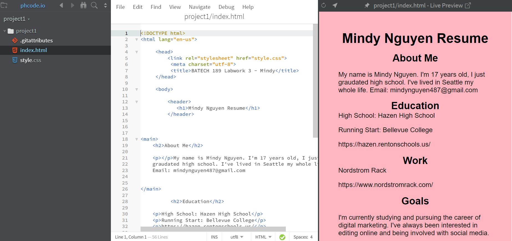
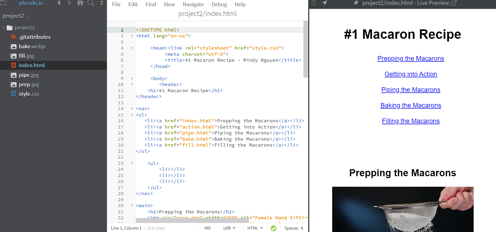
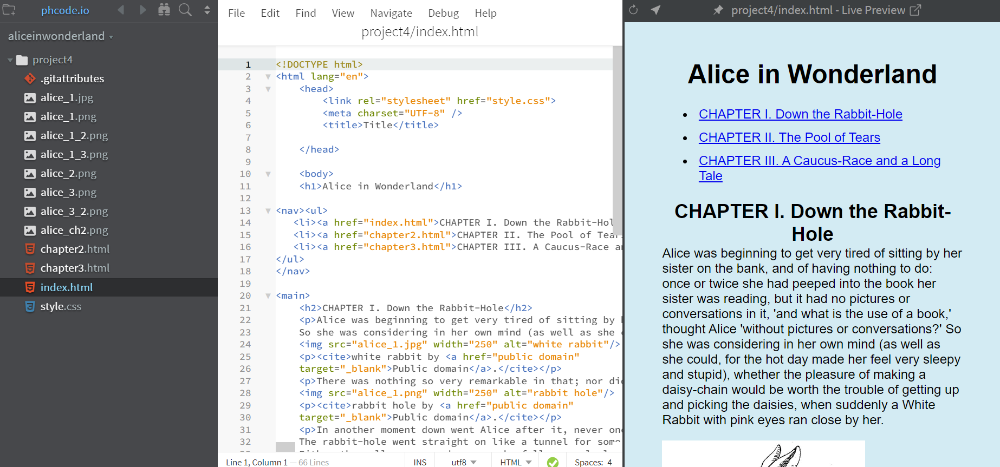
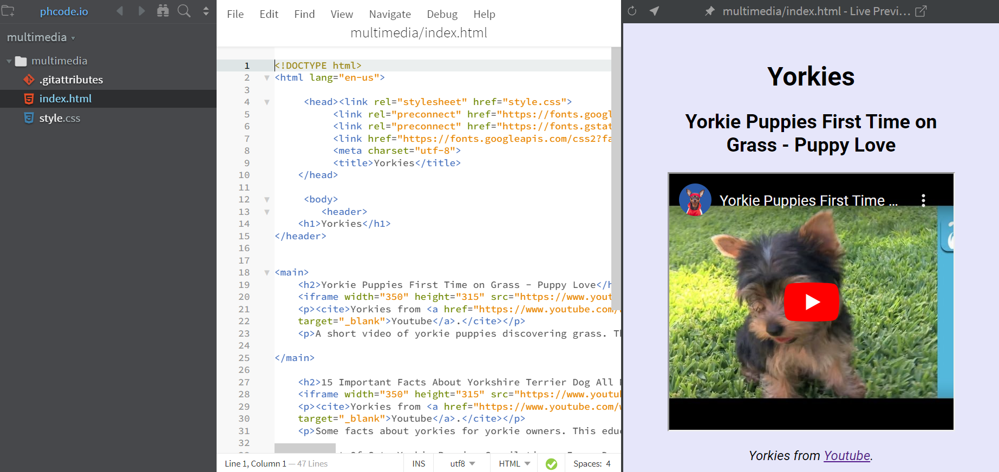

Portfolio
Resume
https://mindydnguyen.github.io/project1resume/For my first web project, I created a resume including a list of my education and work experience. I also provided an introduction for myself as well as stating my goals and interests.
#1 Macaron Recipe
https://mindydnguyen.github.io/project2/For web this project, I shared my macaron recipe and placed them into steps. By doing this, I created 5 sections onto a single page while also providing images I found on Pexels.
Alice in Wonderland
https://mindydnguyen.github.io/project4/This web project, we were given a choice of books to choose from in order to create our own E-book. I ended up choosing Alice in Wonderland. Texts and pictures were already provided, I played around with the codes until I was satisfied with the style of my E-book.
Yorkies
https://mindydnguyen.github.io/multimedia/This web project was slightly different because instead of images, we used videos. The topic of this website is Yorkshire Terriers (Yorkies for short), a small dog breed. I provided Yorkie information for those who own them as well as cute and funny videos.
Conclusion
During the start of this course, I found web development to be extremely difficult. After constantly practicing, it became easier and even entertaining. Some important concepts I've learned during this course is the use of videos and images, styles and designs, and citing.